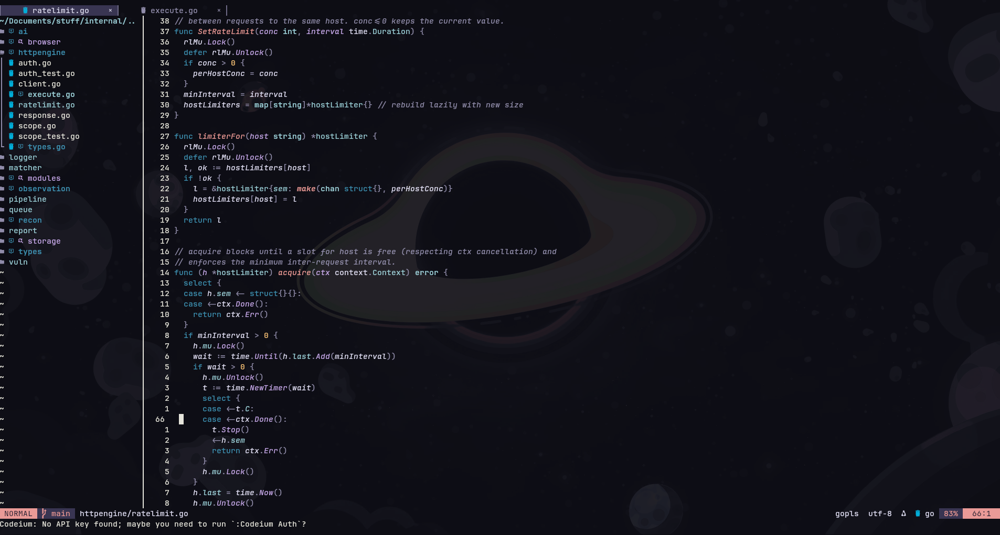

A blazing fast, fully transparent Neovim configuration crafted carefully on native APIs. Designed for developers who love minimalism and premium aesthetics.

We swapped clunky legacy shims with modern native configurations. Here is what makes Kaumudi feel so premium.
Driven by native vim.lsp.config() and vim.lsp.enable(), bypassing old plugin bloat for lightning startup and attachments.
Every floating window, borders, menus, and file trees are completely transparent. Matches any gorgeous desktop style setup perfectly.
No useless extensions. Only top-tier integrations including Treesitter, Telescope, Harpoon, Barbar, Lualine, and Conform.
Out-of-the-box auto-formatting via Conform.nvim and fast diagnostics through nvim-lint with lazy installation hooks.
Integrates code suggestions out of the box with light keys. Fast, smart autocomplete right at your cursor.
Smooth mappings, custom floating terminal toggles, undo history tree visualization, and dynamic session saving.
Up and running in less than 60 seconds. Make sure to back up your old configuration first.
Clean out old state files to prevent package resolution conflicts.
mv ~/.config/nvim ~/.config/nvim.bak
mv ~/.local/share/nvim ~/.local/share/nvim.bak
mv ~/.local/state/nvim ~/.local/state/nvim.bak
mv ~/.cache/nvim ~/.cache/nvim.bakClone the Kaumudi repository directly. Lazy.nvim will auto-install all 42 plugins upon launching.
git clone https://github.com/gyan-cell/nvim ~/.config/nvim
nvimPress <leader>tt inside Neovim to select themes. Click below to preview theme variants live on the interactive mockup editor!
1-- Load Kaumudi Neovim Core options
2local opt = vim.opt
3
4-- Transparency setup and layout options
5opt.termguicolors = true
6opt.cursorline = true
7opt.sessionoptions = "blank,buffers,curdir,localoptions"
8
9-- Register native LSP servers via 0.12 API
10vim.lsp.config("*", {
11 capabilities = require("cmp_nvim_lsp").default_capabilities()
12})
13
14-- Toggle theme immediately with <leader>tt
15vim.keymap.set("n", "<leader>tt", function()
16 require("core.themepicker").pick()
17end, { desc = "Theme Picker" })Engineered for pure speed. Filter categories or type to look up specific binds instantly.
| Key Shortcut | Action / Command | Category |
|---|
Neovim Enthusiast & Software Developer
A developer focused on developer efficiency and clean terminal UI designs. Building Kaumudi Vim was born out of a desire for a perfectly transparent, native API-centric configuration that behaves cleanly across complex multi-language environments without overhead.